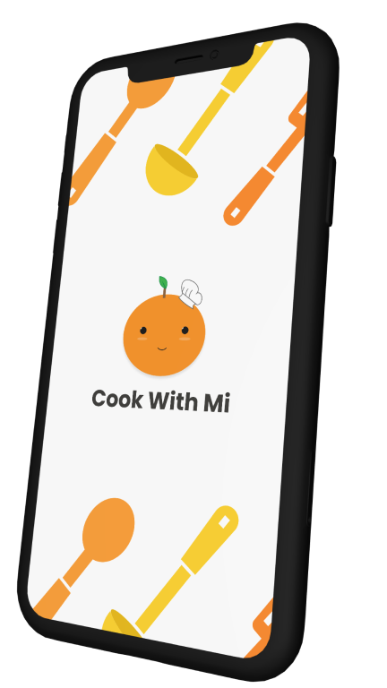
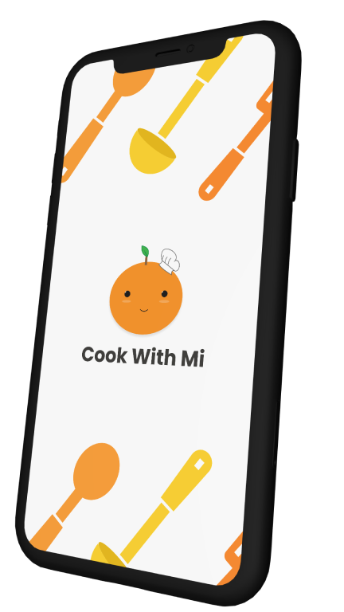

ABOUT
My name is Yukari Connelley.
I’m a fresh graduate of the University of Technology Sydney, holding a Bachelor of Science in Information Technology (Majoring in Interaction Design) and Bachelor of Arts in International Studies (Majoring in Japan).
My current goal is to find work where I can grow and develop my skills as a UX Designer or Software Developer. As long as it’s got to do with making things, I’m interested! If it’s got to do with technology, that’s even better.
Anyway, thank you for taking the time to read this and look at my portfolio. Feel free to poke around or contact me with comments or queries.
My coding proficiency...


 
